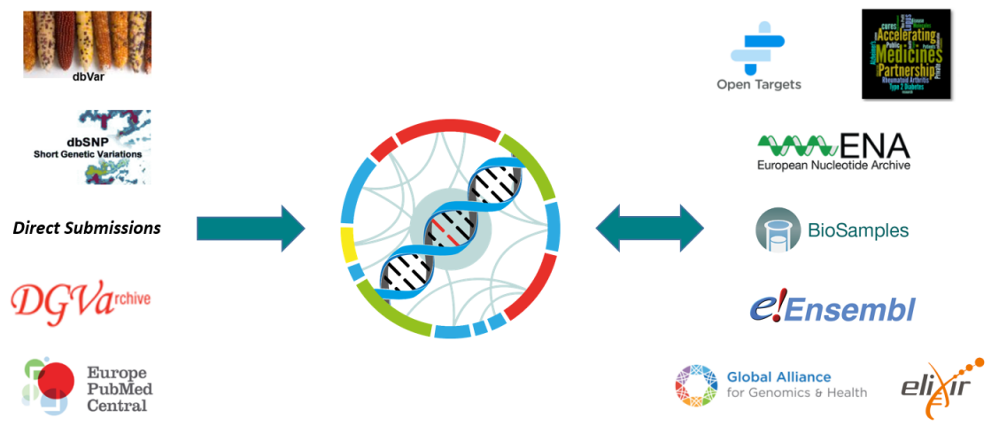
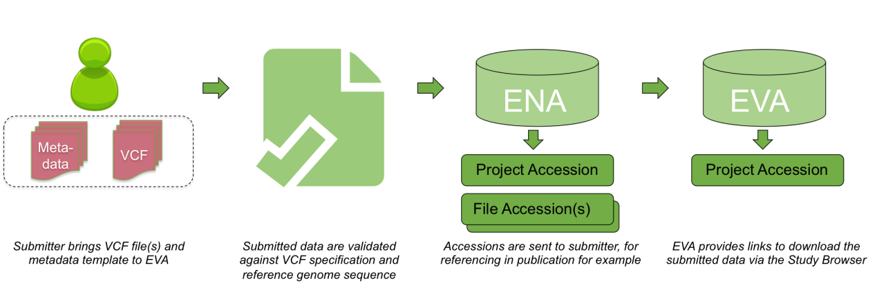

Overview
The European Variation Archive is an open-access database of all types of genetic variation data from all species.
All users can download data from any study, or submit their own data to the archive. You can also query all variants in the EVA by study, gene, chromosomal location or dbSNP identifier using our Variant Browser.
We will be adding new features to the EVA on a regular basis, and welcome your comments and feedback.
Search for SNPs
The RS ID release is available in our FTP or through our API . See release page for details.
News
Statistics
Short genetic variants studies (<50bp)
Structural variants studies (>50bp)
This web application makes an intensive use of new web technologies and standards like HTML5. Please see FAQs for further browser compatibility notes.
Submit
The EVA is based entirely on direct user submissions. If you are interested in submitting your data, please read our Data Requirements and the Key stages of submission below.
Data requirements
EVA accepts all types of precise genetic variants, in any species, provided the following requirements are met:
- Data is described in valid VCF file(s). This can be tested prior to submission using the eva-sub-cli tool. For help with converting variation data to VCF, please see our help pages.
- Data includes sample genotypes in the FORMAT fields and/or allele frequencies in the INFO field
- The reference sequence used is INSDC registered, or will be at point of submission. The type of sequence should be an assembly, e.g. GCA_000002285.4
More details on whether your data is suitable can be found here.
PLEASE NOTE: We support multiple sequence identifiers (CHROM column in VCF), such as INSDC or Refseq identifiers and ENA and Genbank chromosome names. For more details, please see our help pages.
Alternative resources for data not accepted by EVA
Key stages of EVA submissions
Prepare your data and metadata
- Prepare valid VCF file(s), which can be validated prior to submission using the eva-sub-cli tool.
- Complete a metadata template describing the samples and analyses in your study. This can be validated alongside your VCF files with eva-sub-cli. Please provide as much metadata as possible since this information is useful for downstream analysis and leads to increased dataset reuse. For reference, here is an example of a completed metadata template.
- Please also note that the template requires the submitter to fill in some personal data, which will be used as described in our privacy notice.
- If your submission contains human genotype data, then please provide a signed copy of our Consent Statement via email to eva-helpdesk@ebi.ac.uk. See our help section for more info.
Submit via eva-sub-cli
This is our command-line tool for validating and uploading your data and metadata. For instructions on how to install and use eva-sub-cli, please see our documentation.
This method has faster turnaround times, but may be more suitable for more technical users.
Before submitting data through eva-sub-cli, please make sure you have a Webin Account.
OR
Submit via email
Contact eva-helpdesk@ebi.ac.uk to request a submission. You will receive a custom private FTP account to deposit your data and metadata files, as well as further instructions.
This submission method is less technical but may involve longer processing times as we help you validate your data.
Please make sure to read the instructions given in the metadata spreadsheet before submitting.
Access your data
The EVA aims to process submission requests within two business days. Accession numbers will be sent via email to the submitter upon successful archival of the deposited data.
All data that is valid for EVA submission shall be made available via the Study Browser and will be browsable using both the Variant Browser and the EVA API. Our periodic RS Releases will also incorporate the submitted variants.
Feedback
If you have any questions related to the European Variation Archive resource, please contact us.
Follow us on Twitter using @evarchive
API
The general structure of a EVA REST web service URL is one of:
Where:
* version: indicates the version of the API, this defines the available filters and JSON schema to be returned. Currently there is only version 'v1'.
* category: this defines what objects we want to query. Currently there are five different categories for variant information queries: variants, segments, genes, files and studies and two categories for accessioning queries: submitted-variants (to query by SS ID) and clustered-variants (to query by RS IDs)
* resource: specifies the resource to be returned, therefore the JSON data model.
* filters: each specific endpoint allows different filters.
REST web services have been implemented using GET protocol since only queries are allowed so far. Several IDs can be concatenated using comma as separator.
For more detailed information about the API and filters you can visit the project wiki and Swagger documentation for variant information queries and accessioning locus queries.
Some example of queries include:
* To fetch all the variants in a segment region:
http://www.ebi.ac.uk/eva/webservices/rest/v1/segments/11:128446-128446/variants?species=hsapiens_grch37
* To fetch all the info for a variant by ID:
http://www.ebi.ac.uk/eva/webservices/rest/v1/variants/rs666/info?species=hsapiens_grch37
* To fetch locus info for a variant by SubSNP ID (SS ID):
https://www.ebi.ac.uk/eva/webservices/identifiers/v1/submitted-variants/99308221
* To fetch locus and type info for a variant by RefSNP ID (RS ID):
https://www.ebi.ac.uk/eva/webservices/identifiers/v1/clustered-variants/17870277
* To fetch associated SubSNP IDs (SS IDs) for a variant by RefSNP IDs (RS IDs):
https://www.ebi.ac.uk/eva/webservices/identifiers/v1/clustered-variants/17870277/submitted
* To fetch all the Short Genetics Variations studies:
http://www.ebi.ac.uk/eva/webservices/rest/v1/meta/studies/all
* To fetch all the Structural Variations studies:
https://www.ebi.ac.uk/dgva/webservices/rest/v1/meta/studies/all
* To fetch all info of a study:
http://www.ebi.ac.uk/eva/webservices/rest/v1/studies/PRJEB4019/summary
* To fetch all file information of a study:
http://www.ebi.ac.uk/eva/webservices/rest/v1/studies/PRJEB4019/files?species=hsapiens_grch37
Rate Limiting for Variant Region queries
Rate limiting has been implemented on Variant Region queries in order to ensure fairness
when serving multiple client requests. Therefore, please limit Variant Region API request rates to 5 requests/second.
Higher rates of request might result in a HTTP 429 (Too many requests) response.
Also, when specifying the "limit" parameter in these region queries, please restrict it to 10000 or lower. Greater values for this parameter are disallowed and will result in a HTTP 500 (Bad Request) response. Please note that this restriction on the "limit" parameter does not mean that large queries are forbidden altogether. It just means that only a maximum of 10,000 records will be served in a single request. Therefore, a client program can employ the limit parameter in conjunction with the "skip" parameter to "page through" the results from a large region. For example: the following queries can be used to page through the 20,259 results in the variant region 105000001-105500000 in chromosome 1 of the Mouse grcm38 assembly.
- https://www.ebi.ac.uk/eva/webservices/rest/v1/segments/1:105000001-105500000/variants?species=mmusculus_grcm38&limit=10000
- https://www.ebi.ac.uk/eva/webservices/rest/v1/segments/1:105000001-105500000/variants?species=mmusculus_grcm38&limit=10000&skip=10000
- https://www.ebi.ac.uk/eva/webservices/rest/v1/segments/1:105000001-105500000/variants?species=mmusculus_grcm38&limit=10000&skip=20000
Help
- What is the European Variation Archive (EVA)?
- What are the EVA normalisation and variant processing steps?
- With whom does the EVA collaborate?
- How can I follow the development of the EVA?
-
What is the European Variation Archive (EVA)?
The European Variation Archive (EVA) is a primary deposition archive for genetic variation. The EVA is part of the EMBL-EBI infrastructure and accepts submission of all types of precise genetic variants, ranging from single nucleotide polymorphisms to large structural variants, observed in germline or somatic sources, from any organism. The EVA provide access to these data at multiple levels:
i) The original variation data in VCF format as was submitted to the EVA, via the EVA Study Browser
ii) Each individual variant and their genotypes, via the EVA Variant Browser and EVA API
iii) All variant loci associated with RS ids found in one assembly, via the EVA RS release
-
What are the EVA normalisation and variant processing steps?
Variants are merged, normalized and annotated for functional consequences and statistical values -> Non-human variants are accessioned by the EVA. Human variants are brokered to dbSNP at NCBI and resulting SS/RS accessions are ingested by EVA -> Data are exposed as JSON objects either via the EVA website GUI or API" data-svg-source="https://drive.google.com/file/d/1zam0DBdg00b8GnmtWR0LLy6SnHqUGPWP/view">
Normalisation
Variants submitted to the EVA have been determined by a number of different algorithms and software packages. As a result, the VCF files generated by these differing methodologies describe variants in a number of different ways. The primary processing step of the EVA is to normalise variant representation following two basic rules:
- Each variant is shifted to be left-aligned
- The Start and End positions represent exactly the range where the variation occurs (which could, in the case of insertions, result in the reference allele being recorded as 'empty')
Examples of our variant normalisation process can be seen here
Annotation
Once variants have been normalised, the EVA uses the Variant Effect Predictor (VEP) of Ensembl to annotate variant consequences. The variant consequences are described using Sequence Ontology terms and both the VEP version and Ensembl gene build used are described via the "i" help bubbles on the EVA Variant Browser.
N.B. Variants that have been mapped to a reference genome sequence that is not supported by Ensembl are not annotated.Statistical calculations
The EVA adopts the classical definition of allele frequency (AF): 'a measure of the relative frequency of an allele at a genetic locus in a given population'. The AF value(s) stored by the EVA for each variant is (are) study specific - i.e. the same variant reported in two distinct studies shall be given two allele frequencies, one for each study. There are two methodologies by which the EVA is able to determine allele frequency values, dependent on the datatype of the study in question:
Variants associated with genotypes:
For variants associated with genotypes, the EVA determines the AF values via the calculation:
AF = (number of alternate allele observations (AC)) / (number of observations (AN))
The result of this calculation allows the EVA to also store the minor allele frequency (MAF) for each variant (defined as the minimum of the reference or alternative allele frequency) and the MAF allele (the allele associated with the MAF).Variants not associated with genotypes:
For variants that are not associated with genotypes, the EVA is dependent on the AF value(s) estimated from the primary data and provided in the submitted VCF files(s). AF values that are specifically provided in the submitted aggregated VCF file(s) are directly stored. In cases where no AF is provided then the EVA uses the AC and AN values in the submitted aggregated VCF file(s) to calculate AF value(s) via the calculation:
AF = AC / ANPopulation / sample cohort allele frequency values:
The EVA accepts submission of pedigree files, or structured samples (using "derived_from" and/or "subject" layers), to define populations and cohorts within studies. In cases where such information is associated with variants that have genotypes then the EVA calculates intra-study population/cohort specific AF values via the method described above, with the caveat that the (total number of populations/cohorts):(total number of samples) ratio must be less than 1:10. For studies that do not contain genotypes but instead provide intra-study population/cohort AF values in the submitted aggregated VCF file(s), or AC and AN values, then these are directly stored, or calculated by the EVA using the method described above, again with the caveat that a ratio of 1:10 (total number of populations/cohorts):(total number of samples) must not be exceeded.
*NB: there are a low number of variants for which the EVA is unable to determine any allele frequency value(s) as the submitted VCF file(s) contain neither genotypes nor AF or AC and AN values. The EVA discourages submission of variants that cannot be associated with an AF. -
With whom does the EVA collaborate?
dbSNP and dbVar
dbSNP and dbVar maintain the accessions for human variants, while the EVA accessions any non-human species. Human data is routinely exchanged between resources.
Database of Genomic Variants Archive
The sister database of the EVA was initially solely responsible for storing structural variants. This data can now be archived in the EVA, as long as it can be represented in Variant Call Format (VCF).
Europe PubMed Central
An archive for life science literature, which can be directly linked to archived data within the EVA using unique study accessions.
Open Targets
A private-public partnership aiming to systematically identify and prioritize drug targets. The EVA aids in the automation and manual curation of ClinVar traits for the Open Targets platform.
Accelerating Medicines Partnership - Type 2 Diabetes
A knowledge portal enabling observation of human genetic information linked to type 2 diabetes. With the EVA as one of the resources leading the federation component, the software architecture is designed and developed between both resources, to allow submission and consumption across multiple nodes.
European Nucleotide Archive and Biosamples
Data archived at the EVA is first brokered to BioSamples and the ENA to provide unique accessions for each submission. Reference sequences used by submitters must also be present within the ENA, which is part of the International Nucleotide Sequence Database Collaboration.
Ensembl
Ensembl is a genome browser that provides support for a large diversity of species. The EVA provides non-human variant and genotype information, which can then be viewed and downloaded via the Ensembl web browser and API. Ensembl provide the Variant Effect Predictor (VEP) tool, which the EVA uses to functionally annotate archived variants.
Global Alliance for Genomics and Health
An international organization that defines standards for genomic data sharing, with the EVA being one of the driver projects that guide GA4GH development efforts, as well as an active contributor to specifications like the Variant Call Format (VCF).
Elixir
An organization that brings together infrastructure and various scientific communities across Europe. Elixir both supports the EVA as a recommended deposition database, and FAIR data principles for the accessibility and reusablity of genetic data.
-
How can I follow the development of the EVA?
The following are our GitHub repositories:
-
The EVA VCF validator checks that a file is compliant with the VCF specification. It includes and expands the validations supported by the vcftools suite. It supports versions 4.1, 4.2 and 4.3 of the specification.
-
The EVA pipeline processes VCF files, stores the variation data in a database and post-processes it, in a way that can be later consumed via web services.
-
The EVA web services serve the data generated and stored by the EVA pipeline. They follow the REST paradigm and can be consumed by any external application.
-
The EVA website displays the data served by the EVA REST web services API in a user-friendly way.
Acknowledgement
We would like to acknowledge the following software support.


-
- How can I consume variant data from the EVA?
- Which browsers does the EVA website support?
- How can I search EVA with RS and SS identifiers?
- Can I download accessioned variants from the EVA?
- How can I track variants that have been generated, merged and/or deprecated over time?
-
How can I consume variant data from the EVA?
Links are shown on the EVA Study Browser to both the raw submitted files and the 'EVA browsable files'. Not all submitted VCF files for a study are browsable due to overlapping information. For example, we have studies where the submitted VCF files contain the sample and variant data split by population, but also merged together. It would be redundant for the EVA to load all of these data to our variant warehouse. Please note that due to processing time required not all studies have 'EVA browsable files' just yet.
Additionally users can download query results from the EVA variant browser directly and all of our loaded data is available programmatically via our API.
-
Which browsers does the EVA website support?
The EVA website employs HTML5 technologies and standards and is optimized for use with modern browsers. In particular, Chrome (version 73 or higher) and Firefox (version 66 or higher) are fully supported, however older versions of these browsers may give rise to errors.
The EVA website also supports mobile versions of web browsers, with limited functionality. Please report all errors to the EVA helpdesk. -
How can I search EVA with RS and SS identifiers?
The EVA offers users the ability to search 'SS' and 'RS' identifiers generated by the EVA via the Home page, the Variant Browser and the API
-
Can I download accessioned variants from the EVA?
Yes. Each non-human study archived in EVA will contain a VCF file with the accessioned variants (SS ids). After an RS release the EVA will provide a VCF dump for each species/assembly combination. These files contain the rs ID positional information, but not the genotype nor annotation data.
-
How can I track variants that have been generated, merged and/or deprecated over time?
In addition to outputting a VCF file for each rs build the EVA shall also generate a file that will allow users to track changes to variant numbers over time. These files shall include details of all newly generated identifiers for each rs build, a list of those variants that have been deprecated as well as information on any variants that have been merged together. The EVA shall follow the same rules as dbSNP for generating, deprecating and merging variant identifiers.
- Why submit data to the EVA?
- Is my data suitable for submission to the EVA?
- How do I generate a VCF file?
- What happens to my data once submitted?
- Do EVA and dbSNP accept submission of the same genetic variation file format?
- Do EVA and dbSNP collect metadata in the same way?
- Can my submitted data be held privately at the EVA?
- Which data is brokered to DBSNP?
- How do we deal with chromosome or contig name diversity?
- Consent statement for human genotype data
-
Why submit data to the EVA?
The EVA provides to the community a completely free, secure and permanent solution to data sharing. Each project, VCF file and sample that is submitted to the EVA is assigned a unique identifier that is accessible in perpetuity and is therefore able to be referenced in publication, for example. The EVA helpdesk provides support to submitters, and users, to ensure accurate represention and proper integration of the submitted data with other EMBL-EBI resources such as the EGA and Ensembl. A final advantage of submitting to the EVA is that variants are brokered to the National Centre for Biotechnology Information (NCBI) on the submitter's behalf, negating the requirement for independent submissions.
-
Is my data suitable for submission to the EVA?
Is your data open access?The most important consideration is that all data archived at the EVA is open access. As such, there are no restrictions as to who can access the data or how such data is reused. It is the submitter's responsibility to ensure that the data archived at the EVA complies to this open access policy.
If consent was gathered for any individual genotype data in the study then we will require a consent statement to be completed prior to submission.
Is your data represented in a valid VCF file?Genetic variants submitted to the EVA must be described in the Variant Call Format (VCF). The EVA only accepts VCF files that adhere to the specification and match a reference sequence (Versions v4.1, v4.2, & v4.3 accepted) Submitters can make use of the EVA VCF validation suite to ensure they fulfill these requirements. Furthermore, VCF files submitted to the EVA should provide either sample genotypes and/or aggregated sample summary-level allele frequencies. Variant lines should also be unique and not specify duplicate loci as this causes issues during steps such as calculation of population frequencies. Although both per-sample VCFs and merged VCFs are acceptable, merged VCF files containing sample information through the FORMAT field are preferred over separate VCF files for each sample. Single VCF files allow data to be easily reusable and reproducible. Therefore, we recommend merging per-sample VCF files before submission. This allows the data to be easily reusable/reproducible.
- Population allele frequencies: Alleles typically exist at different frequencies in different populations and this information provides useful supporting evidence for all submitted variants. Population-level allele frequencies can be provided in the INFO field of the VCF (see section 1.6.1 of the VCF specification).
- Individual genotypes: EVA accepts individual genotypes from samples provided by donors that have consented to having their DNA sequence housed in a public database. Genotypes can be provided in the FORMAT field of the VCF (see section 1.6.2 of the VCF specification).
Is the reference sequence INSDC registered?The EVA requires that all variants are submitted with an asserted position on an INSDC sequence. This means that the reference allele submitted for every variant must match the position in a sequence that has been accessioned in either GenBank or ENA database. An “INSDC sequence†can be any of, but not restricted to, the following assembled sequences:
- Genome assembly
- Transcriptome
- Gene sequence
Aligning all of our submitted data with INSDC sequences enables integration with other EMBL-EBI resources including Ensembl and is an important step in maintaining standardisation at the EVA. Importantly this requires all sequence identifiers in your VCF to match those in the reference FASTA file.
-
How do I generate a VCF file?
The basic template of a minimal VCF file, where no genotypes are given, looks like this:
##fileformat=VCFv4.3 #CHROM POS ID REF ALT QUAL FILTER INFOWe advise submitters to consult the VCF specification (specifically sections 1.1 and 5) when converting data to VCF in order to ensure that files generated are valid, as this is a mandatory requirement.
Conversion of spreadsheet to VCF
Representing variant data in a spreadsheet can be convenient when you have a small number of variants to report. This file can be used as an example or template: spreadsheet_to_vcf.xlsx (you will need to create a copy). When reporting a large number of variants, the use of specialised software may be a better approach.
Using a spreadsheet editor, you can use the 'Save as' feature to convert the given file to a tab delimited text file. This can also be done using an online editor such as Google Sheets with the 'Download as' option. A tab character will be applied between values entered into separate cells. The result should be a file named 'spreadsheet_to_vcf.tsv'.
The file can be renamed as appropriate although the extension must be changed from '.tsv' to '.vcf' to create a VCF file.
The data entered will remain the same, and the file can be manually checked to ensure spaces between entries are tabulated and there are no extra spaces at the end of lines.
Conversion from PED / genotyping array files to VCF
You can use PLINK1.9 to convert from PLINK text format to VCF, using the command --recode vcf, along with --reference-allele to select the reference alleles. Find more details here.
Useful tools for handling VCF files
- VCF Validation: EVA VCF validation suite
- Sorting, merging and manipulation of VCF files: bcftools
- Variant callers: GATK HaplotypeCaller, Platypus, VarScan, LoFreq, FreeBayes, SNVer, SAMtools and VarDict
Examples of valid VCF submissions
- PRJEB27443 - Simple INDEL submission with allele frequencies
- PRJEB27177 - Single sample VCF with genotype
- PRJEB27093 - Multiple sample VCF with genotypes
- PRJEB4163 - VCF with population allele frequencies and genotypes
- PRJEB6041 - VCF with allele counts (for calculating AF)
Further examples can be found on our FTP site.
-
What happens to my data once submitted?
 Submitted data are validated against VCF specification and reference genome sequence -> Accessions are sent to submitter,for referencing in publication for example -> EVA provide links to download the submitted data via the Study Browser">
Submission validation processes
The EVA VCF validation suite provides tools to check file validity previous to submission.
VCF Specification:
All VCF files submitted to EVA are validated for adherence to the format standard using the EVA VCF validation suite which includes all the checks from the vcftools suite, and some more that involve lexical, syntactic and semantic analysis of the VCF input. The EVA VCF validation suite also includes a debugging tool to automatically correct many of the common errors found in files. To improve processing time, submitters are encouraged to pre-validate VCF files prior to submission.
Genome Assembly:
To improve interoperability of variant data submitted to EVA with other resources at EMBL-EBI, and the wider open-access community, all submitted VCF files are subject to validation against the INSDC accessioned reference sequence indicated by the submitter in their metadata. The EVA VCF validation suite provides an assembly checker tool to validate the reference alleles in the VCF files against the reference sequence. EVA is able to only accept files that match a known sequence at 100%.
Archive process
All VCF files and novel samples that are submitted to EVA are permanently and securely archived at the European Nucleotide Archive and BioSamples , respectively. The EVA provides access to all submitted data via the Study Browser.
Variants within VCF files submitted to EVA are normalised, annotated and used for statistical calculations (via methodologies described below) and these EVA processed data are available via the Study Browser, Variant Browser and the REST API.
Finally, the EVA brokers all submitted data to the NCBI: dbSNP, for short variants (<50bp) dbVar for large variants (>50bp)
-
Do EVA and dbSNP accept submission of the same genetic variation file format?
Yes. EVA, like dbSNP, accepts submission of genetic variation data that is described in Variant Call Format (VCF) files. However, unlike dbSNP, EVA does not have a custom VCF specification. Instead EVA only accepts submission of VCF files that conform to the specification guidelines. Conformity to these guidelines is checked at time of submission, but can also be checked beforehand using our submission command line tool. Further guidelines for submission to EVA can be found here.
-
Do EVA and dbSNP collect metadata in the same way?
No. Although there are many similarities, the EVA and dbSNP metadata templates, which are submitted along with VCF files, are different. The EVA metadata template asks the submitter to provide information about the project, analyses and samples so that these can be archived simultaneously along with the VCF file(s), whereas this is a stepwise process during dbSNP submission. The EVA metadata template can be found here and a mocked up version for a fictional study is here. Detailed information on how to submit to the EVA can be found here.
-
Can my submitted data be held privately at the EVA?
Yes. Data submitted to the EVA can be held privately for up to two years. The date of publication is set by the submitter using the "Hold Date" field of the EVA metadata template.
-
Which data is brokered to DBSNP?
Any variation dataset containing human genotype or allele frequency will be brokered to dbSNP for variant accessioning an assignment of RS ids.
-
How do we deal with chromosome or contig name diversity?
Contig naming convention can vary depending on how the reference genome was obtained. We strive to support multiple chromosome names, such as INSDC or RefSeq identifiers and ENA and Genbank chromosome names. In case we do not support the naming convention you have used, please contact eva-helpdesk@ebi.ac.uk.
-
Consent statement for human genotype data
The EVA is an open access resource, and it is the submitter's responsibility to ensure their data is compliant with this policy. If human genotype data is to be submitted then we request a Consent Statement to be completed prior to submission via email to eva-helpdesk@ebi.ac.uk. Your submission will only be processed after receiving the consent statement. If your data contains allele frequencies and no genotypes then no consent statement is needed. Please consider that if your data requires controlled access, an alternative EMBL-EBI service, the European Genome-phenome Archive (EGA; www.ebi.ac.uk/ega), will be more suitable for your submission.
- What metadata accessions are administered by the EVA?
- What variant accessions will be administered by the EVA?
- Will it be possible to retrieve existing dbSNP identifiers from the EVA?
- Why are some variants in a different strand than the one dbSNP reports?
- Why can't I find some of the dbSNP identifiers on the EVA website?
- Will there be EVA builds or releases like the dbSNP ones?
-
What metadata accessions are administered by the EVA?
The EVA follows the SRA model for accessioning metadata:
- A submitted project is administered a 'project' accession. These begin "PRJEB" followed by a numerical sequence.
- Each analysis object within a project is administered an 'analysis' accession. These begin "ERZ" followed by a numerical sequence.
Both the project and analysis accessions are sent to the submitter once the data has been validated and fully archived at EMBL-EBI. The project and analysis accessions are stable identifiers that are suitable for publication.
-
What variant accessions will be administered by the EVA?
The EVA shall follow the same accessioning principles employed by dbSNP: non-human variants that are submitted to the EVA are issued 'Submitted SNP' (SS) identifiers, and these are periodically clustered to form 'Reference SNP' (RS) identifiers.
Submitted SNP (SS)
A Submitted SNP (SS) identifies a variant submitted in the context of a genomic study. New SS IDs issued by the EVA will always be linked to a change from a reference allele to a single alternate allele. This means that a SS ID uniquely identifies a combination of:
- Taxonomy (e.g. 9615 - dog)
- Reference sequence (e.g. CanFam3.1)
- EVA study or dbSNP batch (e.g. PRJEB24066)
- Contig or chromosome
- Start position
- Reference allele
- Alternate allele
Most pre-existing dbSNP identifiers also follow this rule but, in some cases, multiple alternate alleles in the same location could be assigned a single SS ID depending on the representation at the time of submission.
An SS ID is linked to a variant in a particular study. Therefore, the same variant reported across multiple files in the study will still be assigned only one SS ID.
Submissions
The following restrictions apply to EVA submissions, although legacy dbSNP identifiers are preserved even if they don’t:
- Variants must have a specific location in a sequence accessioned by INSDC in order to be archived and accessioned.
- Variants must have supporting evidence (genotypes and/or allele frequencies) in order to be archived and accessioned.
- Non-variants (as in gVCF reference blocks) will be archived, but will neither be assigned an SS ID nor displayed in the Variant Browser.
Reporting
The list of SS IDs issued for a submission are provided to the submitter in VCF format, as in this example; please note the SS IDs listed there are mere examples and do not refer to real variants. Multi-allelic variants are split in multiple records, one per alternate allele. Variants are always reported in the forward strand.
Reference SNP (RS)
A Reference SNP (RS) identifies a variant class in a genomic location, which can be reported by one or more studies. RS IDs are preserved when remapped to a newer version of the reference sequence they were initially mapped against; this allows to track how they have evolved with the passing of time. This means that a RS ID can be associated with one or more combinations of:
- Taxonomy (e.g. 9615 - dog)
- Reference sequence (e.g. CanFam3.1)
- Contig or chromosome
- Start position
- Variant class
The following table lists the mapping between variant classes supported by dbSNP and the EVA, and the Sequence Ontology terms used by the latter.
dbSNP class EVA class Sequence Ontology term SNV SNV SO:0001483 DIV deletion SO:0000159 insertion SO:0000667 indel SO:1000032 HETEROZYGOUS STR / microsatellite tandem repeat SO:0000705 NAMED sequence alteration SO:0001059 NO VARIATION no sequence alteration SO:0002073 MIXED MNV MNV SO:0002007 Please note that due to the different granularities, dbSNP DIV variants will be assigned the appropriate EVA class when imported.
HETEROZYGOUS and MIXED variants were initially defined but no longer supported in any of the non-human dbSNP databases, thus why the EVA hasn’t defined a mapping.
Variants of class NO VARIATION will no longer be accessioned by the EVA, but legacy identifiers will be preserved.Reporting
The list of RS IDs issued for a species in a release will be provided in VCF format, as in this example; multi-allelic variants are split in multiple records, one per alternate allele, even if several of them have the same variant class. Coordinates are mandatory in VCF format, so RefSNP's without them won't be included in the dump. Please note the example file is the actual RS release for the barrel medic species (Medicago truncatula).
-
Will it be possible to retrieve existing dbSNP identifiers from the EVA?
Yes. The EVA is committed to the continuation of existing dbSNP identifiers for Submitted SNP (SS) and Reference SNP (RS).
The identifiers of those dbSNP variants that satisfy the EVA submission requirements will be retrievable via the EVA variant browser and web services API. If you want to learn more about EVA submission requirements, please click here.
dbSNP variants that don't satisfy these requirements will still be imported and searchable via a specific API and web view. We will work to make this experience as intuitive as possible, while keeping our commitment to only make high-quality variants part of the core EVA database.
-
Why are some variants in a different strand than the one dbSNP reports?
The EVA accepts variant submission in the forward strand only, whereas dbSNP is not so restrictive. In addition to this, dbSNP registers multiple orientations:
- Contig to chromosome
- SNP to contig
- SubSNP (ss) to RefSNP (rs)
As a result, variants with a 'reverse' orientation will be displayed differently despite the underlying data being equivalent.
-
Why can't I find some of the dbSNP identifiers on the EVA website?
We will gradually import the dbSNP data, and your species of interest may not have been yet processed. Please check our status report on the transition process.
If a species has been fully imported and your variant of interest is not displayed in our browser, please communicate the issue via eva-helpdesk@ebi.ac.uk
-
Will there be EVA builds or releases like the dbSNP ones?
Yes. The EVA will create RefSNP dumps in VCF format every 6 months, starting in 2019. These dumps shall contain the most basic information about each RefSNP:
- Genomic coordinates
- Reference and alternate alleles in the forward strand
- Identifiers of the studies that reported the variant
The release files will only contain this information for the following reasons:
- Reduce their size
- Distribute only information that will not get outdated, as new studies may come in very often
- Avoid merging genotypes from multiple studies conducted with different technologies
The list of RS IDs issued for a species in a release will be provided in VCF format; multi-allelic variants are split in multiple records, one per alternate allele, even if several of them have the same variant class. Coordinates are mandatory in VCF format, so RefSNP's that could not be mapped against an assembly will be reported separately. Variants with the unspecified allele <*> or breakend notation will be excluded from the VCF files. An example file containing the actual RS release for the barrel medic species (Medicago truncatula) can be found here.
The details of study submissions, reported genotypes and frequencies, variant annotation, etc, can be retrieved from the EVA website through one of the following methods: FTP, VCF download from the Variant Browser or REST API.
Frequently Asked Questions
-
How to reference archived data?
Archived data can be referenced using the project accession & associated URL e.g. The variant data for this study have been deposited in the European Variation Archive (EVA) at EMBL-EBI under accession number PRJEBxxxx (https://www.ebi.ac.uk/eva/?eva-study=PRJEB*****)
-
How to cite EVA?
The EVA can be cited directly using the associated literature: Cezard T, Cunningham F, Hunt SE, Koylass B, Kumar N, Saunders G, Shen A, Silva AF, Tsukanov K, Venkataraman S, Flicek P, Parkinson H, Keane TM. The European Variation Archive: a FAIR resource of genomic variation for all species. Nucleic Acids Res. 2021 Oct 28:gkab960. doi: 10.1093/nar/gkab960. PMID: 34718739.